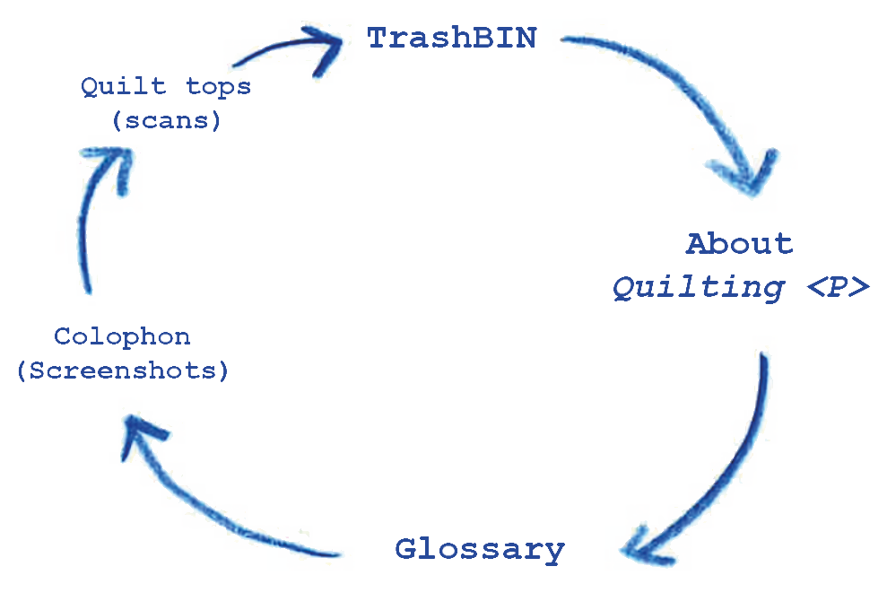

A quilt is a record of time through scrapped fabrics and cloths. When they come together they make a visual archive of what has been worn and thrown out. Without the present to look back at it, it is not as meaningful. There should be an anchor in time to make a look-back insightful.
The webquilt operates as a webring, you can view each section by clicking on the arrows and they will take you through these pages:

When interacting with the TrashBIN, you might notice that some websites appear broken due to CORS. Cross-Origin Resource Sharing helps to view “web applications that are loaded in one domain to interact with resources in a different domain”. The link might be broken or not displayed correctly for security reasons.
The glossary contains translations of digital CSS elements to quilting definitions. These definitions also apply from the physical materials to the digital, often translated from an action, a visual and contextual perspective.
The screenshots displayed in the colophon are a collection of digital scraps from the class. They have been embedded in a way where it resembles a physical quilt, playing around with different threads by using dashed lines, dots and juxtapositions.
The physical quilt exhibits translations of websites made during our quilting workshop. We gathered together and asked our classmates to think of a website that they wanted to recreate with fabric scraps. You can view these digitally on the Quilt top (scans) section, you can view the original website by clicking onto the quilt top.
This project is by Sevgi Tan and Martina Farrugia (XPUB1).